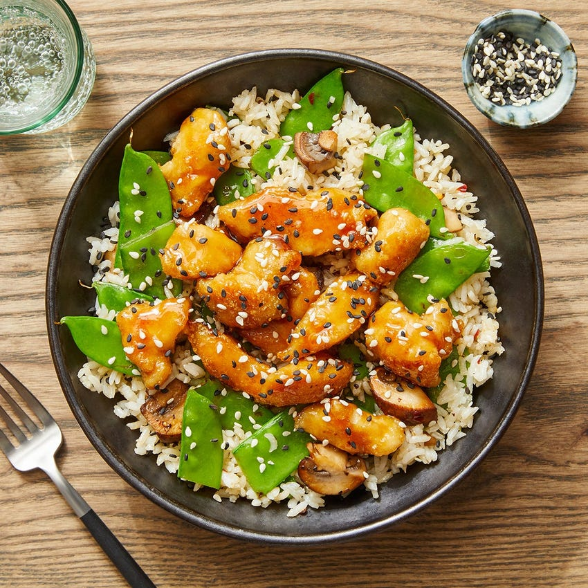
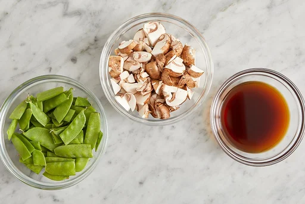
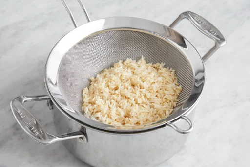
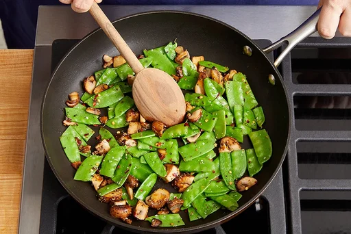
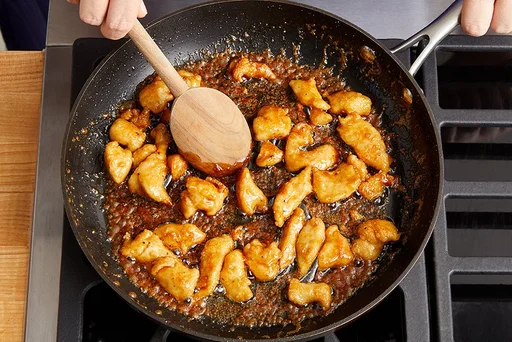
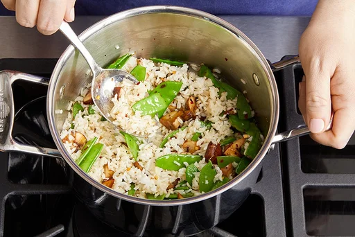

Soy & Butter-Glazed Tofu
with Sesame Vegetables & Brown Rice
This recipe is an absolute staple for me! The perfect customizable oriental dish with a blend of sweet, and spicy while being fairly healthy.

Ingredients
Two Servings
- 10oz Tofu or 10 oz Chopped Chicken Breast
- 4 oz Snow Peas
- 2 Tbsps Butter
- ¼ cup Rice Flour
- 3 Tbsps Soy Glaze
- 2 Tbsps Rice Vinegar
- 4 oz Cremini Mushrooms
- 1 Tbsp Sesame Oil
- ¼ tsp Crushed Red Pepper Flakes
- 1 tsp Black & White Sesame Seeds
- ½ cup Brown Rice
Great Optional Additions
- Shredded or Baby Carrots
- Garlic
- Brussel Sprouts
Time Saving Tips & Tricks
How to cook your grains "Pasta" Style
For the grain in this recipe, an exact ratio of water to grain isn't necessary. You just need enough boiling water to give the grain some room and let it dance: a few quarts will do. We chose this method because it's more streamlined and easier for hearty grains (like farro, spelt and wild rice). Just think: cook it like pasta!
Step by Step Instructions

Prepare the ingredients & make the glaze:
- Fill a medium pot 3/4 of the way up with water; add a big pinch of salt. Cover and heat to boiling on high. Wash and dry the fresh produce. Cut the mushrooms into bite-sized pieces. Halve the snow peas crosswise. In a bowl, combine the soy glaze and vinegar. If you haven't already, start pressing your tofu.

Cook the rice:
- Add the rice to the pot of boiling water and cook, uncovered, 17 to 19 minutes, or until tender. Turn off the heat. Drain thoroughly and return to the pot.

Cook the vegetables:
- Meanwhile, in a medium pan (nonstick, if you have one), heat the sesame oil on medium-high until hot. Add the mushroom pieces in an even layer. Cook, without stirring, 3 to 4 minutes, or until lightly browned. Add the halved peas and as much of the red pepper flakes as you’d like, depending on how spicy you’d like the dish to be; season with salt and pepper. Cook, stirring occasionally, 2 to 3 minutes, or until softened. Transfer to a bowl and cover with foil to keep warm. Wipe out the pan.

Coat, cook & glaze the chicken:
- Pat the tofu dry with paper towels (I recommend pressing extra firm tofu for at least 20 minutes prior); place in a bowl and season with salt and pepper. Add the flour or cornstarch and toss to coat. In the same pan, heat a thin layer of oil on medium-high. Once the oil is hot enough that a pinch of flour sizzles immediately when added, add the coated tofu in an even layer (discarding any excess flour). Cook, without stirring, 3 to 4 minutes, or until lightly browned. Continue to cook, stirring occasionally, 2 to 3 minutes, or until browned on all sides. Add the glaze (carefully, as the liquid may splatter). Cook, stirring occasionally and spooning the glaze over the tofu, 1 to 2 minutes, or until the tofu is coated and cooked through. Turn off the heat. Stir in the butter until melted and combined.

Finish the rice & Server your dish:
- Add the cooked vegetables to the pot of cooked rice; stir to combine. Taste, then season with salt and pepper if desired. Serve the glazed tofu (including any glaze from the pan) over the finished rice. Garnish with the sesame seeds. Enjoy!
I hope you enjoy this as much as I do! Be sure to comment your thoughts and I would love to hear your favorite spin and tweaks on this recipe!